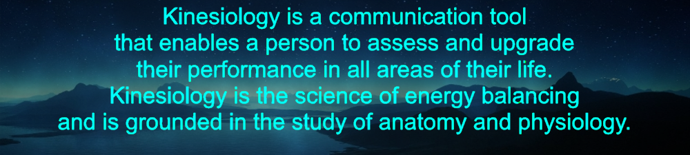
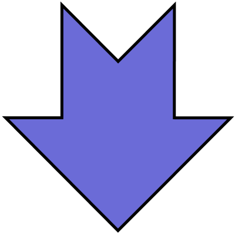

<div class="container navigation">
  <div class="row justify-content-center">    
    <button class="btn col-2" >GO TO KINESIOLOGISTS</button>    
    <button class="btn col-2" [routerLink]="['/home', {outlets: {'info': ['whatIs']}}]">WHAT IS KINESIOLOGY?</button>
    <button class="btn col-2" [routerLink]="['/home', {outlets: {'info': ['types']}}]">TYPES OF SESSIONS</button>
    <button class="btn col-2" [routerLink]="['/home', {outlets: {'info': ['benefits']}}]">BENEFITS OF KINESIOLOGY</button>
  </div>  
</div>
<router-outlet name="info"></router-outlet>
<div class="kinesiologists" id="kinesiologists">
  <app-kinisiologists></app-kinisiologists>
</div>
<!--<div class="definition  col-9">
  <carousel [interval]="10000" class="text-center">
    <slide>
      
    </slide>
    <slide>
      
    </slide>
  </carousel>
</div>
<div class="container mainContainer">
  <a href="#kinesiologists">
    <div class="kinisiologistsLink col-2">
      <br>
      <h5>KINESIOLOGISTS</h5>
      
    </div>
  </a>

  <div class="benefits col-9">
    <h2>WHY KINESIOLOGY</h2>
    <div class="container-fluid">
      <div class="row">
        <ul class="col-4">
          <li>Enhance learning</li>
          <li>Assist in personal perfomance</li>
          <li>Brain Integration</li>
          <li>Eliminate stress</li>
        </ul>
        <ul class="col-4">
          <li>Help overcome past trauma</li>
          <li>identify nutritional deficiency</li>
          <li>help overcome fears and phobias</li>
          <li>Aid in injury healing</li>
        </ul>
        <ul class="col-4">
          <li>Brain integration</li>
          <li>Boost Sport perfomance</li>
          <li>Help with finance decision making</li>
          <li>Pin-point and eliminate allergic reactions</li>
        </ul>
      </div>
    </div>
  </div>
</div>-->
<!--MOBILE-->
<!--<div class="definitionMobile">
  <h4>Kinesiology is a communication tool that enables a person to assess and upgrade their perfomance in all areas of their life.
      It is the science of energy balancing and is grounded in the study of anatomy and physiology.</h4>
</div>-->
